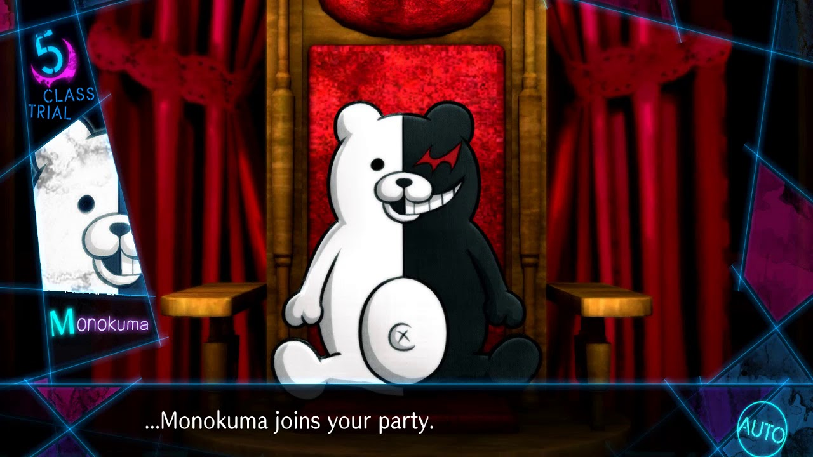

About
 Introducing himself as the headmaster of Hope´s Peak Academy Monokuma (a walking talking teddy bear) is the main character of Danganronpa series. As headmaster he observes the killing games that takes place on his academy and ensure that the students obey all rules and regulations, he also sits and observes the students during their class trials and helps them with questions and answer that may help them discover the murderer and also act as executioner, killing the student who is found guilty.
Personality Traits
- Cheerful
- Immature and Childish
- Sadistic
His School
Hope’s Peak High Academy is the school where Monokuma works as a headmaster and performs his killing games on his students.